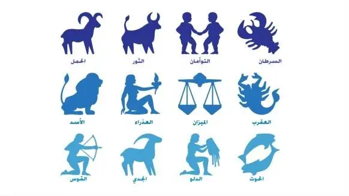

أخبار علمية ·
التنجيم.. ومن أيّ البروج أنت؟ – د. هاني الضليع
لم تعرف العرب البروج قط، فلم تكن تستعمل النجوم سوى للسفر عبر الصحراء بحثا عن الماء والكلأ. لكنهم عرفوا حركة السماء والفصول ومواعيد الأمطار والرياح، فلم يكونوا ينتقلون من مكان إلى آخر حتى يثقوا بوجود المطر هناك. فكانت نجوم سمائهم منازل للشمس والقمر، وهي 28 منزلة كالثريا والدبران والنعائم وسعد السعود وسعد الأخبية.. إلخ، وتنزل الشمس في كل واحدة منها 13 يوما حتى ينقضي العام وتكتمل الفصول.
غير أن الأمم الأكثر مدنية في ذلك الزمان كانت مستقرة في بلدانها ومعتمدة على الزراعة في معاشها، وهي الأمم التي نشأ لديها التنجيم، خصوصا التي عبدت الكواكب أو ربطت حركتها بإرادة الآلهة, فكل نجوم السماء ثابتة في أشكالها وصورها سوى بضعة أجرام تتحرك بينها هي الكواكب السيارة، ظنوها تتقمص روح الآلهة وظنها آخرون الآلهة نفسها.
فالزهرة عندهم هي آلهة الجمال، والمريخ إله الحرب، والمشتري هو كبير الآلهة، وهكذا بقية الكواكب؛ مما أوحى إلى الناس أنهم يرون آلهتهم ويدعونها. فإذا استطاعوا أن يتنبؤوا بحركة هذه الكواكب ومواضعها بين النجوم، كانوا قادرين على معرفة ما يخبِّئ لهم المستقبل، أو هكذا ظنوا، فنشأ التنجيم مذ ذاك. وأخذ الملوك يقربون المنجمين منهم طمعا في معرفة طالعهم، وحفظا لعروشهم وأمن مدنهم وممالكهم.
وكانت وظيفة المنجم في الأساس فلكية علمية بحتة عرفت وقتها باسم علم الهيئة، يحسب فيها مواضع الكواكب وأوقات منازل الشمس وتحير الكواكب وخنوسها في ضوء الشمس، ويضع حساباته هذه في جداول تعرف بالأزياج اشتهر منها عربيا زيج الصابئ، وزيج أولغ بيك.
وعلى الرغم من مخالفة التنجيم لتعاليم الدين الإسلامي، فإن أكثر الفلكيين الذين سطعت أسماؤهم في التاريخ العربي الإسلامي قد اشتغلوا به وكانوا مقربين من الخلفاء أو الولاة آنذاك.
| برج الرامي من كتاب صور الكواكب للصوفي (الجزيرة) |
ورغم مرور أكثر من ألفي سنة على ظهور التنجيم، لا يزال المنجمون حتى يومنا هذا ينقلون ما رسمه القدماء لمواضع البروج، ومواعيد نزول الشمس فيها، ولم يعلموا أن السماء تدور، وأن للأرض حركة ثالثة قد غيرت كل أساسات معرفتهم.
فأكثر الناس يعرفون بروجهم التي ينتمون لها، وهذه البروج هي على الترتيب: الحمل، الثور، التوأمان، السرطان، الأسد، العذراء، الميزان، العقرب، القوس، الجدي، الدلو، الحوت. ويُعد يوم 21 مارس/آذار التاريخ الأهم في هذا الفن، فهو يوم ابتداء فصل الربيع حين تستوي الشمس فوق خط الاستواء فيتساوى طول الليل والنهار، وتكون الشمس يومها في برج الحمل.
لذا فإن كل من يولد في الفترة التي تقع فيها الشمس في برج الحمل (21 مارس/آذار – 20 أبريل/نيسان) يعدّ من مواليد برج الحمل. وبتقسيم السماء إلى 12 برجا تقع الشمس كل شهر في برج منها، فإن كل البشر ينتمون إلى 12 فئة، مما يعني أن كل نصف مليار من سكان العالم الحالي يحملون الطالع ذاته، والتوقعات التنجيمية ذاتها، لماذا؟ لأن المشترك بينهم أنهم ولدوا في البرج نفسه كما يدعي المنجمون.
ولو علم الناس الحقيقة المرة لانتابهم شعور آخر حيال التنجيم. فمن المعلوم أن الأرض تدور حول الشمس كل سنة، وتدور حول محورها كل يوم، لكنها كذلك تدور بطريقة ثالثة لا يعرفها أكثر الناس وهي حركة المحور نفسه بشكل ترنحي تمايلي يغير من اتجاهه نحو النجوم في دورة يبلغ طولها 26 ألف سنة، وهذه الحركة هي المسؤولة عن موقع نقطة الاعتدال الربيعي التي لما ظهر التنجيم قبل ألفي سنة، كانت في برج الحَمَل، وعليه حاز الحَمَل على شرف أن يكون أول البروج ترتيبا.
ومع تغير اتجاه محور الأرض بسبب هذه الحركة، تغير معه هذا الترتيب، فلم يعد برج الحمل في علم الفلك هو البرج الأول، بل أصبح برج الحوت كذلك بدلا منه، وهذا يعني أن كل مواليد برج الحمل الحاليين هم مواليد برج الحوت.

رموز البروج الاثني عشر(الجزيرة)
ولما قام الاتحاد الفلكي الدولي في عام 1928 برسم حدود كل برج في السماء وحدد مواعيد دخول الشمس في كل منها، اكتشف الفلكيون أن ثمة برجا ثالث عشر قد دخل على التقسيم الجديد للبروج اسمه الحواء، ويقع بين برجي العقرب والقوس وتمكث الشمس فيه 18 يوما، في حين لا تمكث في برج العقرب سوى سبعة أيام فقط.
وعليه فلم تعد الشهور مقسمة بالتساوي على البروج الاثني عشر، بل تفاوتت أيامها طبقا لفترة مكوث الشمس فيها. وبهذا فقد تغيرت جميع قواعد اللعبة التي كان التنجيم قائما عليها، فلا معنى لسنة تتكون من 13 برجا ولا قدسية لبرج الحَمَل بعد ذلك.
بل إن الأدهى من ذلك -والأمر بالنسبة للمنجمين- أننا لو قمنا بتعريف مدار البروج بأنه المسار الذي تسير فيه الشمس فقط، فإن عدد بروجه ستكون 13 برجا، وإذا عرفناه بأنه المسار الذي تسير فيه الشمس والكواكب جميعا، فإن عدد بروجه سيرتفع إلى 24 برجا. وماذا عن البروج التي ستضاف لو أننا اعتبرنا مسار كوكب بلوتو أو الكواكب المكتشفة حديثا؟ هل هي من ضمن صلاحيات المنجمين أم خارجها؟
أما الأسئلة المحيرة التي لا تجد إجابات لدى المنجمين فهي كثيرة لكن أكثرها غرابة ثلاثة، أولها: هل للحيوانات برج وطالع؟ وهل يجب على الفلاح الذي يبحث عن كلب حراسة أن يسأل عن كلاب من مواليد برج ما؟ وثانيها: لماذا يعتبر يوم الولادة هو يوم برج الإنسان وليس يوم الحمْل، إذ هي اللحظة الحقيقية بالنسبة لتأثير الأجرام السماوية على الوليد؟
وثالثها: إذا صحت أقوال المنجمين بأن مواليد بعض الأبراج هم الأفضل من الناحية الشخصية والقيادية من بين آخرين ولدوا في أبراج أقل حظا، أفلا يعني هذا أن على العالم أن يجعل زعماءه وقادته فقط من مواليد هذه الأبراج السعيدة؟ ألا يكون هذا هو عين العنصرية والشوفينية؟
ختاما، ربما لم يحقق الطب حتى اليوم تقدما في العثور على أثر مباشر للنجوم والأجرام السماوية على الإنسان، لكن ثمة دراسات تقول إن بعض مستشفيات الأمراض النفسية في بعض البلدان تلزم موظفيها بمناوبات طوارئ أيام القمر البدر منتصف كل شهر قمري، لحدوث حالات هيجان عند بعض المرضى في تلك الأيام المحددة.
لكن المؤكد عند كل البشر هو أن ضوء مصباح وأحد مضاء في غرفة النوم سيقلق شخصا ما أضعافا مضاعفة عما يمكن أن يسببه ضوء القمر وضوء كل النجوم مجتمعة لو نام هذا الشخص يوما في العراء. فهل يصح القول بأثر النجوم على مستقبل البشرية بعد ذلك؟
منشور منقول من أرشيف موقع الاتحاد كما نُشر، مع تنظيف التنسيق.